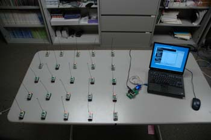
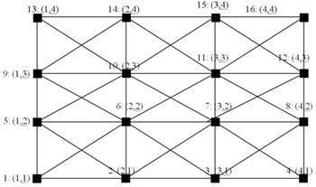

Agilla addresses each node by its location rather than its TinyOS ID. This is because agents need to know their location to correlate sensor readings with the location from which they were obtained. Having a sensor reading without its location is not useful. For example, if an agent takes a temperature reading and determines that there is a fire, it cannot simply tell a base station "fire" but rather "fire at (1,2)." By utilizing a location-centric addressing scheme, Agilla provides a unified way of identifying nodes, and allows its primitives to be generalized to operate over regions (e.g., out a tuple into all tuple spaces within a particular geographic region).
Since TinyOS does not provide geographic routing or location discovery, the current verion of Agilla utilizes a multi-hop sensor network arranged in an n x m grid. Each node is identified by its integer (x,y) location. The lower-left corner of the network is location (1,1) and the x and y coordinates increase going left and up, respectively. The mote connected to the base station has a location of (0,0). Below is a 5 x 5 sized network:

A multi-hop network is achieved by modifying the TinyOS network stack to examine and filter out messages fron non-neighbors. A node can only communicate with its imediate neighbors as specified by the grid topology. For example, a node located at (2,2) can communicate with nodes (1,1), (1,2), (1,3), (2,1), (2,3), (3,1), (3,3), (3,4).
To simplify geographic routing, the mote ID relates to its location as follows:
ID = x + (y-1)*(number of columns)
Given the ID, the location can be calculated as follows:
x = [(ID-1) mod (number of columns)] + 1
y = (ID – x)/(number of columns) + 1
For example, in a 4x4 network, the nodes would have the following
IDs and locations:

The base station is a special case with an ID of 0 and a location of (0,0). The base station can interact with any node in the network using the build-in geographic routing. Internally, it nodes in the first row (x=1).
To change the size of the network, open <agilla>/types/Agilla.h and change the NUM_ROWS and NUM_COLUMNS macros. Once you have changed this, you need to recompile Agilla and re-install it on all of the motes. Agilla comes with a simple gawk script that re-installs Agilla on all of the mote, prompting you to install each mote onto the programming board. Use it by going to <agilla> and typing gawk -f installer.awk.